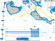
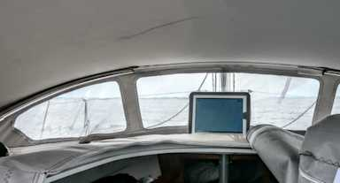

The sea demands mastery. These pages help you answer that call.
Before any instrument was ever bolted to a mast, mariners read the wind through feel alone — the brush of air on a wetted finger, the shiver of a telltale, the barely audible dialogue between canvas and breeze. That ancient skill remains indispensable even in the age of the Orca CoPilot wind display. An instrument shows you the number; your body must feel the truth behind it.
Apparent versus true wind is the first riddle every sailor must solve. As your yacht accelerates, the apparent wind swings forward. A true 12-knot breeze on the beam becomes a 17-knot apparent wind forward of the beam at six knots of boat speed. Modern instruments, connected via the Orca Core to your masthead unit, calculate both vectors in real time — but the sailor who cannot visualise that triangle blindly trusts a number without understanding its soul.
Watch the water surface: dark cat's-paws skitter toward you on an otherwise glassy sea — that is your 10-second warning of a puff. Cloud shadows racing across the horizon foretell a filling breeze. The sea has always telegraphed its intentions; the skilled sailor simply learns to receive the message.

Every offshore passage is a conversation between destination and wind direction. When the wind lies ahead, the sailor must tack — turning the bow through the wind, exchanging port for starboard tack — to make ground to windward in a zigzag of controlled elegance. The Orca weather routing algorithm performs precisely this calculation mathematically: it knows your boat's polar diagram, the forecast wind fields and the geography, and draws the optimum ladder of tacks before you leave the harbour.
A textbook tack demands coordination: helm turns at the right pace — too slow and momentum is lost, too fast and the headsail backs violently — sheets released at the moment the sail begins to shiver, new sheet hauled as the bow passes through the wind eye, and eased to the correct trim on the new tack before boat speed builds again. In a well-drilled crew this flows like a sea shanty; in a short-handed passage it becomes a precise solo performance.
When a waypoint lies directly to windward, Orca calculates the optimum cross-course laylines based on the current polar data and wind forecast. The app displays the split-tack route visually on the chart, showing the bearing and distance of each leg. A single glance tells you whether to tack now or hold on for another mile — a decision that once demanded pencil, protractor and experience now arrives in under a second.
The jibe — turning stern through the wind — requires equal discipline but different dangers. A controlled jibe in 20 knots is a moment of choreographed violence: the mainsheet must be gathered in before the boom swings, then paid out immediately under tension after the jibe to prevent a slam that can break fittings, injure crew and dismast in extreme cases. Practise it in moderate conditions until it becomes reflex — the sea will eventually test you in conditions that allow no rehearsal.
Close-hauled sailing rewards fine sheeting: the headsail telltales streaming aft on both sides simultaneously mark the sweet spot. Reaching demands a progressively eased mainsheet and a traveller brought to weather. Running dead downwind introduces the risk of an accidental gybe and the vague steering that invites a broach — many offshore sailors prefer to sail slightly by the lee with a preventer rigged, using the boat's speed and stability rather than fighting the geometry.
The Orca app's live wind display, showing true wind angle and speed alongside the chart, enables you to monitor your angle relative to optimum VMG continuously — a luxury unavailable to the navigators who crossed oceans with only a compass and the stars.

The sea withholds its truest character until the barometer falls and the sky turns the colour of pewter. It is in these moments — foam streaking horizontally, the hull shuddering in long grey swells — that preparation meets reality. No amount of app data substitutes for a reefed mainsail taken in while the sky was still pale, before the squall reached you.
Reef early, reef deliberately. Every experienced offshore sailor repeats the mantra: the reef you wish you had taken is always the reef you should have taken an hour ago. Orca's weather routing displays forecast wind speeds hour by hour along your route; a glance at the wind barbs marching along your intended track tells you exactly when the next strengthening band will arrive — and gives you time to prepare the boat in daylight and relative comfort.
The Orca Display 2's waterproof shell, tested to IPX7 submersion, means the navigator can remain below on the chart table while streaming instrument data from the Core unit above deck, then bring the tablet into the cockpit as needed without fear of a boarding sea turning it into expensive ballast.
Modern yachts bristle with instruments: wind transducers, knotmeters, depth sounders, GPS antennas and autopilot compasses. Each generates a stream of data that, until recently, lived in isolated silos on separate displays around the cockpit. The Orca Core, connected to the vessel's NMEA 2000 backbone, acts as a universal translator, gathering every data stream and presenting it inside a single, beautifully legible interface.
The customisable instrument panel within CoPilot allows you to arrange SOG, COG, TWS, TWA, AWS, AWA, depth, heading and heel angle in configurations tailored to your sailing style. Racing crews monitor VMG and target angles; cruising sailors watch depth and tidal set; delivery skippers track fuel burn and engine hours. The screen adapts to the crew that stands the watch.
Compatible autopilot systems from Garmin, Raymarine and B&G respond to commands issued directly from the chart interface — engage, disengage, alter course by five degrees, or instruct the pilot to follow the plotted route waypoint by waypoint. The boundary between navigator and helmsman dissolves; the boat steers itself while you watch the weather ahead with eyes unclouded by the compass.